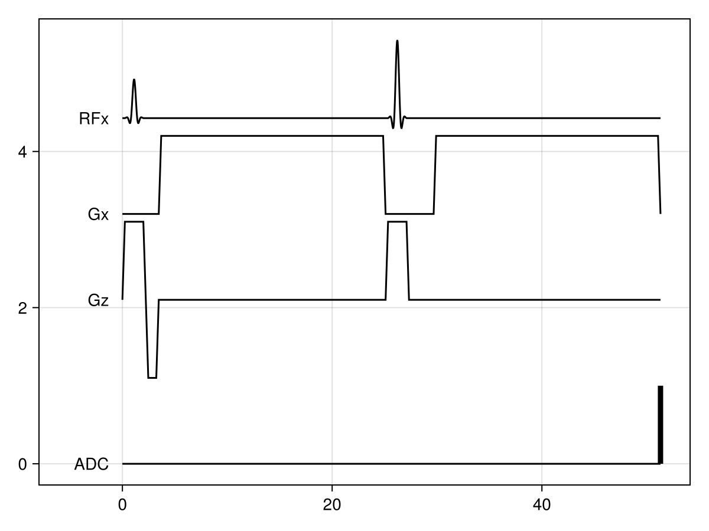
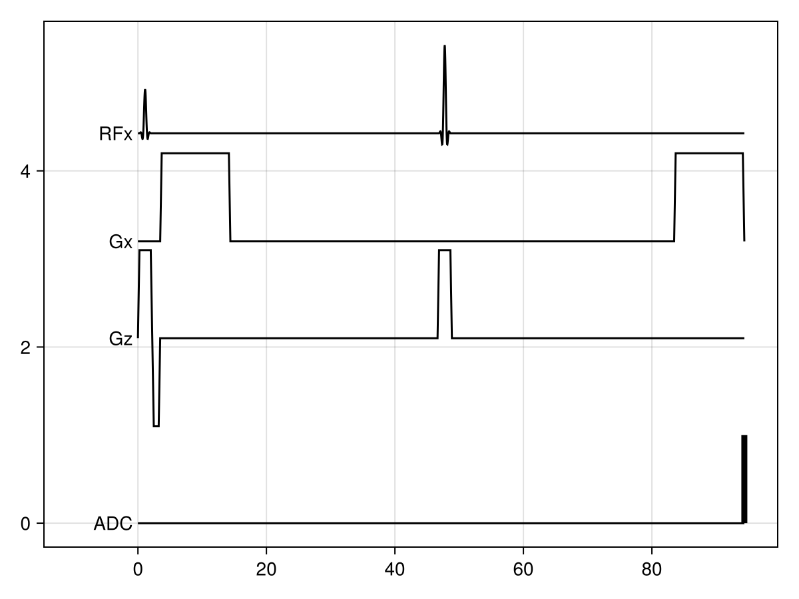
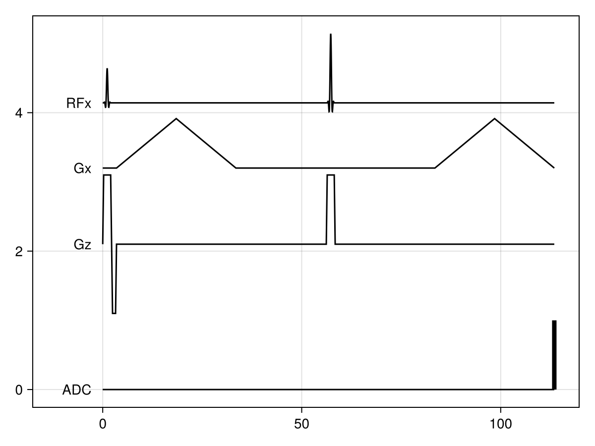
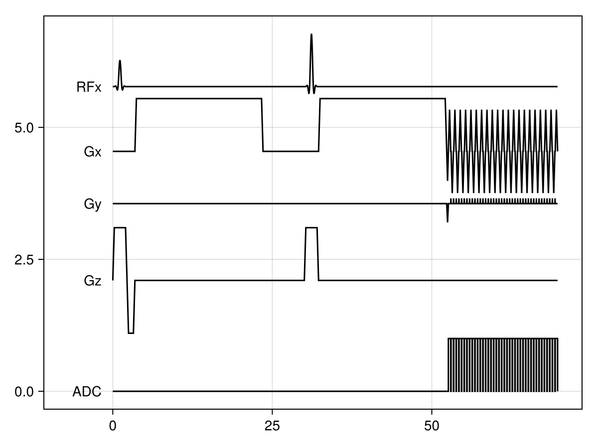

Using implemented sequences
Usage
MRIBuilder comes with several sequences pre-defined. Each sequence can be created through a simple function call. To get help on a specific sequence, either follow the link in the sequence list below or type ?<function_name> in Julia.
When reading the help, you will notice that there are two type of expected inputs:
Parameters: these define the type of components that will be included, e.g., the shape of the excitation pulse or the readout strategy. These parameters have to be set to certain fixed values. If not set, they will be determined by their default value as defined in the documentation.Variables: These are a special type of parameters. In addition to being set to a fixed value, they can also be set to:minor:maxto minimise or maximise the variable. If they are not set, they will be determined based on the optimisation or fixing of other variables. For more details, see the section on sequence optimisation. All variables are available in thevariablesmodule. They can also be accessed as properties of the specific pulse/gradient/readout/block (i.e.,block.<variable_name>).
As an example, the following creates and plots a DiffusionSpinEcho that has a b-value of 1, a minimal echo time, and a slice thickness of 2 mm:
using MRIBuilder
using CairoMakie
sequence = DiffusionSpinEcho(bval=1., TE=:min, slice_thickness=2)
f = plot(sequence)
f
If we want a specific variables.diffusion_time, we can just add it to the constraints, and the rest of the sequence will adapt as needed:
sequence = DiffusionSpinEcho(bval=1., diffusion_time=80, TE=:min, slice_thickness=2)
f = plot(sequence)
f
We can even directly set some aspect of one of the sequence components, such as slowing down the gradient variables.rise_time and the additional constraint will just be included in the sequence optimisation:
sequence = DiffusionSpinEcho(bval=1., diffusion_time=80, TE=:min, slice_thickness=2, gradient=(rise_time=15, ))
f = plot(sequence)
f
Note that the previous sequences do not contain a realistic readout. Most sequences will only include an instant readout, unless you directly set the variables.voxel_size and variables.resolution.
sequence = DiffusionSpinEcho(bval=1., TE=:min, voxel_size=2, resolution=(20, 20, 20))
f = plot(sequence)
f┌ Warning: The relaxation is only almost solved.
└ @ Juniper ~/.julia/packages/Juniper/93Umc/src/model.jl:113
┌ Warning: The relaxation is only almost solved.
└ @ Juniper ~/.julia/packages/Juniper/93Umc/src/model.jl:113
Available sequences
MRIBuilder.Sequences.GradientEchoes.GradientEcho — Method
GradientEcho(; echo_time, excitation=(), readout=(), optim=() resolution/fov/voxel_size/slice_thickness, scanner)Defines a gradient echo sequence with a single readout event.
By default, an instant excitation pulse and readout event are used. If image parameters are provided, this will switch to a sinc pulse and EPI readout.
Parameters
excitation: properties of the excitation pulse as described inexcitation_pulse.readout: properties of the readout as described inreadout_event.- Image parameters (
variables.resolution/variables.fov/variables.voxel_size/variables.slice_thickness): describe the properties of the resulting image. Seeinterpret_image_sizefor details. optim: parameters to pass on to the Ipopt optimiser (see https://coin-or.github.io/Ipopt/OPTIONS.html).scanner: Sets theScannerused to constraint the gradient parameters. If not set, theDefault_Scannerwill be used.
Variables
variables.TE/variables.echo_time: echo time between excitation pulse and readout in ms (required).variables.duration: total duration of the sequence from start of excitation pulse to end of readout in ms.
MRIBuilder.Sequences.SpinEchoes.SpinEcho — Method
SpinEcho(; echo_time, delay=0., excitation=(), refocus=(), readout=(), optim=(), resolution/fov/voxel_size/slice_thickness, scanner)Defines a spin echo sequence with a single readout event.
By default, an instant excitation and refocus pulse and readout event are used. If image parameters are provided, this will switch to a sinc pulse and EPI readout.
Parameters
excitation: properties of the excitation pulse as described inexcitation_pulse.refocus: properties of the refocus pulse as described inrefocus_pulse.readout: properties of the readout as described inreadout_event.- Image parameters (
variables.resolution/variables.fov/variables.voxel_size/variables.slice_thickness): describe the properties of the resulting image. Seeinterpret_image_sizefor details. optim: parameters to pass on to the Ipopt optimiser (see https://coin-or.github.io/Ipopt/OPTIONS.html).scanner: Sets theScannerused to constraint the gradient parameters. If not set, theDefault_Scannerwill be used.
Variables
variables.TE/variables.echo_time: echo time between excitation pulse and spin echo in ms (required).variables.delay: delay between the readout and the peak of the spin echo in ms (positive number indicates that readout is after the spin echo). Defaults to zero.variables.duration: total duration of the sequence from start of excitation pulse to end of readout or spoiler in ms.
MRIBuilder.Variables.variables.echo_time — Function
echo_time(sequence)Returns the echo time of a sequence in ms.
This is typically defined as the time between the excitation pulse and the crossing of k=0 during the MRI readout.
MRIBuilder.Sequences.DiffusionSpinEchoes.DiffusionSpinEcho — Method
DiffusionSpinEcho(; echo_time, delay=0., excitation=(), gradient=(), refocus=(), readout=(), optim=(), resolution/fov/voxel_size/slice_thickness, scanner)Defines a diffusion-weighted spin echo (Stejskal-Tanner) sequence.
DWI, DW_SE, and DiffusionSpinEcho are all synonyms.
By default, an instant excitation pulse and readout event are used. If image parameters are provided, this will switch to a sinc pulse and EPI readout.
Parameters
excitation: properties of the excitation pulse as described inexcitation_pulse.gradient: properties of the diffusion-weighting gradients as described indwi_gradients.refocus: properties of the refocus pulse as described inrefocus_pulse.readout: properties of the readout as described inreadout_event.- Image parameters (
variables.resolution/variables.fov/variables.voxel_size/variables.slice_thickness): describe the properties of the resulting image. Seeinterpret_image_sizefor details. optim: parameters to pass on to the Ipopt optimiser (see https://coin-or.github.io/Ipopt/OPTIONS.html).scanner: Sets theScannerused to constraint the gradient parameters. If not set, theDefault_Scannerwill be used.
Variables
variables.TE/variables.echo_time: echo time between excitation pulse and spin echo in ms.variables.delay: delay between the readout and the peak of the spin echo in ms (positive number indicates that readout is after the spin echo). Defaults to zero.variables.duration: total duration of the sequence from start of excitation pulse to end of readout or spoiler in ms.variables.Δ/variables.diffusion_time: Time from the start of one diffusion-weighted gradient till the other in ms.
MRIBuilder.Variables.variables.delay — Function
delay(sequence)Returns the offset beetween the readout and the spin echo in ms.
MRIBuilder.Variables.variables.diffusion_time — Function
diffusion_time(diffusion_sequence)Returns the diffusion time of a DiffusionSpinEcho in ms.